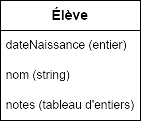

class: center, middle # Programmation procédurale : # les structures <img height="200px" src="img/logo.png"> --- ## On parle de quoi ? 1. <a href="UAA11-ch9.html#3">Le concept de structure</a> 2. <a href="UAA11-ch9.html#4">Création d'une structure</a> 3. <a href="UAA11-ch9.html#5">Déclaration d'une variable et utilisation</a> 4. <a href="UAA11-ch9.html#6">Tableau de structures</a> 5. <a href="UAA11-ch9.html#7">La structure : un type comme un autre</a> --- ## Le concept de structure Une **structure** permet de grouper plusieurs variables de types différents en un seul endroit. Chaque variable contenue dans une structure est appelée **membre** de la structure.  --- ## Création d'une structure Une structure est créée à l'aide du mot-clé `struct`. Généralement, pour maintenir un code propre, on utilise un synonyme en complément. ```c #define TAILLE_MAX_NOM 100 #define NB_COTES_MAX 10 struct eleve{ char nom[TAILLE_MAX_NOM]; int dateNaissance; float cotes[NB_COTES_MAX]; }; typedef struct eleve Eleve; ``` --- ## Déclaration d'une variable et utilisation Grâce au synonyme, il est facile de déclarer une variable de type structure. Une fois la structure déclarée, les membres d'une structure peuvent être accédés à l'aide d'un point (symbole `.`). ```c void main(void){ Eleve eleve1, eleve2; eleve1.dateNaissance = 2006; eleve2.dateNaissance = 2007; strcpy_s(eleve1.nom, TAILLE_MAX_NOM, "Robin"); strcpy_s(eleve2.nom, TAILLE_MAX_NOM, "Maxime"); eleve1.cotes[0] = 6; eleve2.cotes[0] = 7.5; } ``` --- ## Tableau de structures ```c #define NB_ELEVES_MAX 25 #define NB_COTES_MAX 10 void main(void){ Eleve eleves[NB_ELEVES_MAX]; float somme; for(int iEleve = 0; iEleve < NB_ELEVES_MAX; iEleve++){ somme = 0; for(int iCote = 0; iCote < NB_COTES_MAX; iCote++){ somme += eleves[iEleve].cotes[iCote]; } printf("Moyenne pour cet eleve : %.2f", somme / NB_COTES_MAX); } } ``` --- ## La structure : un type comme un autre Une structure est un type à part entière ! Elle peut donc être utilisée : * comme type de retour d'une fonction (sortie d'une fonction) * comme argument d'une fonction (entrée d'une fonction) * comme type d'un tableau ```c Eleve creerEleve(void); float calculerMoyenne(Eleve eleve); Eleve trouverMeilleurEleve(Eleve listeEleves[]); ``` --- ## La structure : un type comme un autre → <span style="color:red">les structures sont passées par copie !</span> ```c void main(void){ Eleve eleve; eleve.dateNaissance = 1998; eleve.cotes[0] = 10; modifieEleve(eleve); printf("%d\n", eleve.dateNaissance); printf("%d\n", eleve.cotes[0]); } void modifieEleve(Eleve eleve){ eleve.dateNaissance = 0; eleve.cotes[0] = 0; } ```